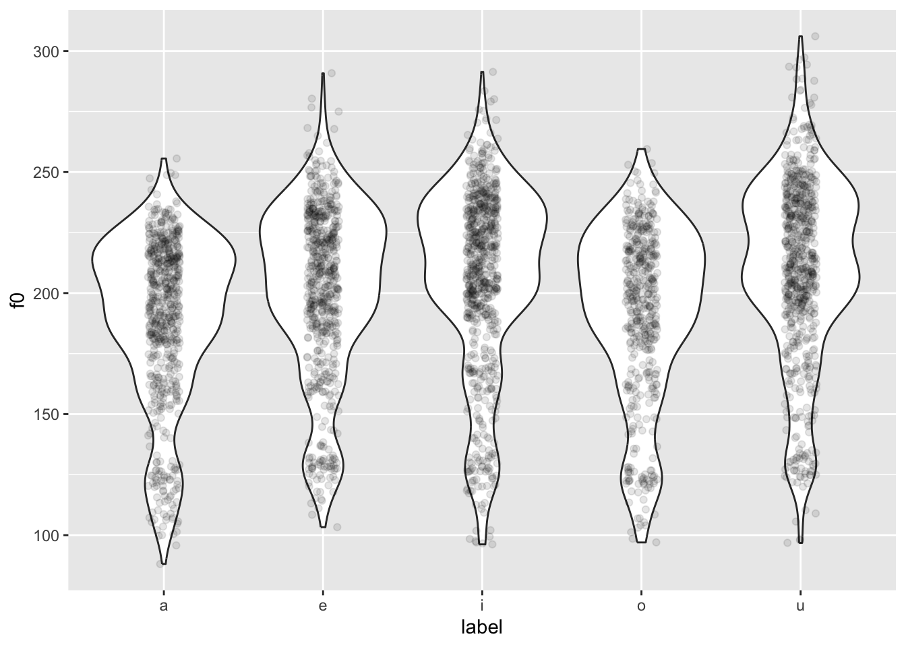

# .rda are R data files and they can be read with `load()`
load("data/coretta2018a/formants.rda")DAL tutorial - Week 8
Advanced plotting
1 Overview
In this tutorial, you can go through the different sections in any order you like and you can pick and choose which sections you want to work on.
The tutors will be able to help you chose sections that might be useful based on your interests or your dissertation projects (whether you are working on it now or you will next year!).
In this tutorial, there will be less explicit instructions or explanations. Before starting, make sure you attach the necessary packages (like tidyverse).
You can find information on the data in the QM data website.
2 Formant data
In this section we will plot formant data from Italian.
The data contains F1 and F2 measurements at 3 points within each vowel. We want to plot the values at the mid-point of the vowel.
formants |>
ggplot(aes(f12, f22, colour = vowel)) +
geom_point(alpha = 0.5)
This doesn’t look right tho… Shouldn’t /a/ be at the bottom, /i/ on the top-left and /u/ on the top-right?
Let’s fix this! First we need to use f22 as the x-axis and f12 as the y-axis.
formants |>
ggplot(aes(f22, f12, colour = vowel)) +
geom_point(alpha = 0.5)
But now the plot is upside-down!
To fix this we need to reverse both axes with scale_*_reverse().
formants |>
ggplot(aes(f22, f12, colour = vowel)) +
geom_point(alpha = 0.5) +
scale_x_reverse() + scale_y_reverse()
We can do better! Let’s split the data for each participant and let’s plot ellipses for each vowel.
We can plot speakers separately with facet_wrap(): this works like facet_grid() but instead of specifying variables for rows and columns you just specify one variable and the data of each value in that variable will be plotted in a separate panel. This is useful when you have many different values, like speaker here. (if you want to learn how to make your plot taller, like the one below, check the Extra box below).
formants |>
ggplot(aes(f22, f12, colour = vowel)) +
geom_point(alpha = 0.5) +
stat_ellipse() +
scale_x_reverse() + scale_y_reverse() +
facet_wrap(vars(speaker), ncol = 3)
If you want to learn how to normalise the data across speaker so that you can recreate the following plot, check Section 4 .
formants |>
group_by(speaker) |>
mutate(
f1_z = (f12 - mean(f12)) / sd(f12),
f2_z = (f22 - mean(f22)) / sd(f22)
) |>
ggplot(aes(f2_z, f1_z, colour = vowel)) +
geom_point(alpha = 0.5) +
stat_ellipse() +
scale_x_reverse() + scale_y_reverse() +
labs(
title = "Normalised F1/F2 plot of 5 Italian vowels",
x = "F2 (norm)", y = "F1 (norm)"
)
3 Reaction times
You have learnt how to use density plots, but an alternative way of plotting continuous data by categorical groups is to use strip charts and violin plots, alone or in combination!
Let’s plot reaction times from the shallow data.
shallow <- read_csv("data/song2020/shallow.csv")Rows: 6500 Columns: 11
── Column specification ────────────────────────────────────────────────────────
Delimiter: ","
chr (8): Group, ID, List, Target, Critical_Filler, Word_Nonword, Relation_ty...
dbl (3): ACC, RT, logRT
ℹ Use `spec()` to retrieve the full column specification for this data.
ℹ Specify the column types or set `show_col_types = FALSE` to quiet this message.You can plot violin plots using geom_violin(). A violin is basically just a density plot, mirrored vertically. The wider parts of the violin indicate a greater density of data around the related y-axis values.
shallow |>
# we filter to include only the critical trials
filter(Critical_Filler == "Critical") |>
ggplot(aes(Relation_type, RT)) +
geom_violin() +
facet_grid(cols = vars(Group))
We can overlay a strip chart, which is basically just the raw data, plotted as dots that are jittered horizontally.
shallow |>
# we filter to include only the critical trials
filter(Critical_Filler == "Critical") |>
ggplot(aes(Relation_type, RT)) +
geom_violin() +
# the width argument in geom_jitter() specifies how wide the jitter should be, as
# a value between 0 and 1.
# the lower the number, the narrower the jitter.
geom_jitter(width = 0.1, alpha = 0.25) +
facet_grid(cols = vars(Group))Can you tell if there are differences in RTs between the different groups and relation types?
4 Fundamental frequency (f0)
# .rda are R data files and they can be read with `load()`
load("data/coretta2018a/formants.rda")Let’s plot f0 for different vowels. We can use a violin plot with a strip chart (see previous section!).
formants |>
ggplot(aes(label, f0)) +
geom_violin() +
geom_jitter(width = 0.1, alpha = 0.1)
You might notice something weird going on… The violins are quite bumpy! This is because different people have different mean f0.
We want to normalise the data across speakers, so that individual differences in mean f0 are removed. This process is also called standardisation or z-scoring.
Z-scores are a standardised unit that allows you to compare things that are on different scales. Our f0 values are on different scales because some speakers have higher mean f0, some have lower mean f0.
Z-scores are calculated by removing the mean from each value and dividing it by the standard deviation. Since we are normalising within subject, we need to calculate the mean and standard deviation for each participant and apply those to each participant’s data separately.
formants <- formants |>
# group data by speaker so that normalisation is applied for each speaker
# separately
group_by(speaker) |>
# calculate z-scores
mutate(
f0_z = (f0 - mean(f0)) / sd(f0)
)
head(formants$f0_z)[1] 3.4126740 -0.9289615 1.1254401 -0.5180812 -1.0111376 0.2488954Now we can recreate the plot above but using f0_z.
formants |>
ggplot(aes(label, f0_z)) +
geom_violin() +
geom_jitter(aes(colour = vowel), width = 0.1, alpha = 0.1)Why is colour = vowel in geom_jitter(aes(...))? Because we want to colour only the jittered points. If we put colour = vowel in the main ggplot(aes(...)) , then the violin borders would also be coloured.
If you want to colour the areas of the violins instead, you can use the fill aesthetic. This will work both in the main ggplot(aes(...)) or in geom_violin(aes(...)) because the points of geom_jitter() can’t be given a colour fill, but only a colour.
5 Rating (Likert) scales
Rating scales, like Likert scales, are very strange variables. They are categorical and ordinal.
Despite being very common, the practice of treating Likert scales as numeric is quite inappropriate. For an explanation, check the first two pages of Verissimo 2021.
A very nice type of plot that is very useful for Likert scale data is a so-called divergent stacked bar chart.
The HH package has a few handy functions to make creating divergent stacked bar charts very straightforward. You will have to install this package (remember not to include the code for installation in your document; you need to install the package only once).
We will create a plot of language attitudes towards Esperanto and Emilian (Gallo-Italian). Let’s read the data (it’s an .rds file!). Participants were asked the following: “when you hear somebody speaking Emilian/Esperanto, you would think they are…” and they were presented with 9 adjectives, which they had to rate from strongly disagree (meaning they strongly disagreed that somebody speaking Emilian/Esperanto had that quality) to strongly agree (meaning they strongly agreed that the person had that quality). Esperanto speakers rated Esperanto while Emilian speakers rated Emilian.
emilianto_attitude <- readRDS("data/hampton2023/emilianto_attitude.rds")To be able to plot with the likert() function from the HH package, we first need to wrangle the data.
Basically, we need a new tibble with counts of each value of the scale for each of the adjectives participants had to rate. Make sure you understand each line of the following code.
emilianto_lik <- emilianto_attitude %>%
# let's select only the columns we need
select(language, educated:familiar) %>%
# let's pivot the data so that we get a longer tibble, with the columns
# language, adjective and score
pivot_longer(educated:familiar, names_to = "adjective", values_to = "score") %>%
# and we count the numbers of each adjective and score combo
count(language, adjective, score) %>%
# then we pivot again so that now the data is wider, with the columns,
# language, adjective, and one column for each of the five scores
pivot_wider(names_from = "score", values_from = n) %>%
# we rename the scores to the actualy label that the participants saw
rename("strong disagree" = `1`, "disagree" = `2`, "neither" = `3`, "agree" = `4`, "strong agree" = `5`)
emilianto_likNow we can finally plot this using the likert() function. The function takes a formula that describes how to plot the data: here, we want a divergent stacked bar for each adjective and we want all the scores (adjective ~ .), but we also want to facet by language (| language).
HH::likert(
# formula
adjective ~ . | language,
# data
emilianto_lik,
as.percent = TRUE,
# plot title
main = "Language attitudes towards Emilian and Esperanto"
)
What is that HH::likert()? That’s the R way of calling a function from a package directly, without the need to attach the full package with library(HH). This is useful, for example, for packages that override functions from other packages when attached or for packages that attach a lot of package dependencies.
In most cases you won’t have to worry, but if you ever think that function overwriting is causing issues, you know you can use the package::function() syntax.
What can you tell about the attitude towards Emilian and Esperanto from the plot?